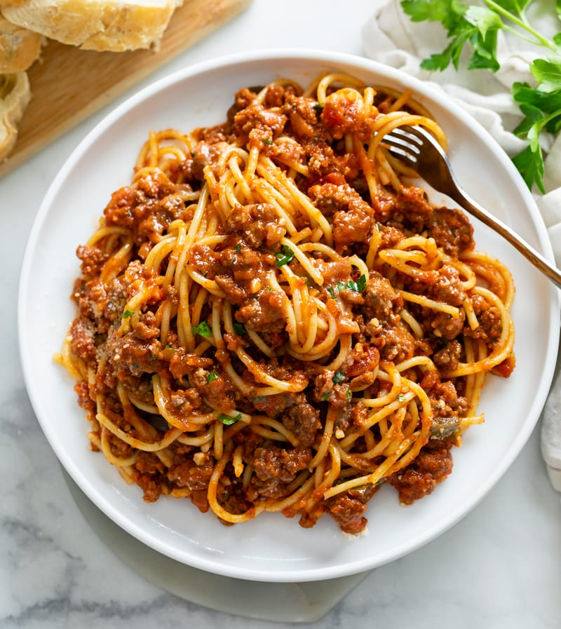

Beef Marinara

Ground beef and marinara sauce with boxed sphagetti.
quick cook time and good macros make for a sensible meal.
Ingredients
- 1lb ground beef
- 1 box sphagetti
- 1 jar of marinara sauce
- optionally: thyme,oregano,onion powder,garlic powder, red wine, balsamic vinegar, fresh garlic, onions, tomato paste
Steps
- Cook pasta as directed on Box
- In another pan, add ground beef, cover with amount of optional ingridents that feels right
- cook beef until boiling noises become frying noises, then cook another 2 mins
- after 2 mins, add jar of tomato sauce
- cook on low-medium until acidic flavor of tomato sauce mellows out
- cover and remove from heat, serve hot on the pasta you forgot about
Home